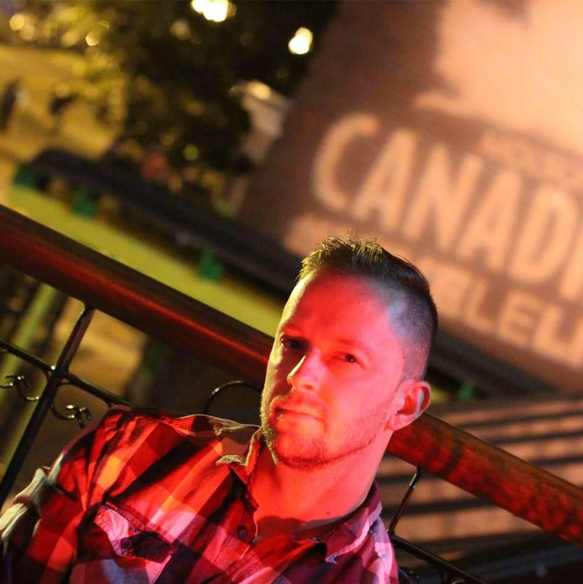

About Me

Traveler, Guitarist, Technology Enthusiast, Security Officer and aspiring web developer. Adam Zamojski is dedicated into crafting and developing quality web content. Has a passion and love for music. He currently works as a security officer with the Department of Homeland Security protecting the nation’s traveling public.
Adam graduated from the University of Massachusetts with a B.S. in Information Technology and is currently enrolled in Rutgers Coding Bootcamp. Traveling around the globe, meeting new people and cultures are some of Adam’s hobbies and provide inspiration for his dedication.